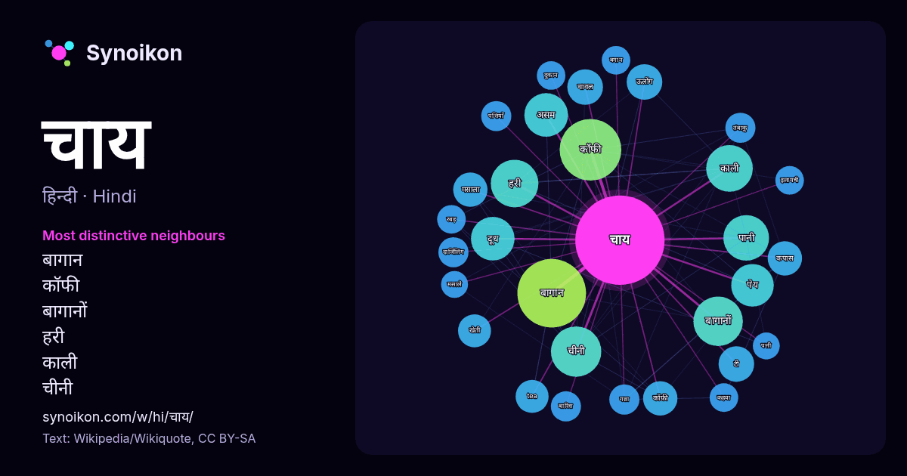

हिन्दी · आज के शब्दों की सूची
चाय
“tea” · विकिपीडिया, Wikiquote के 770 प्रयोगों में इसके आसपास मिले शब्द।

सबसे विशिष्ट पड़ोसी
- बागान 50×
- कॉफी 39×
- बागानों 27×
- हरी 23×
- काली 21×
- चीनी 19×
- असम 19×
- पेय 19×
- दूध 17×
- ऊलोंग 15×
- कॉफ़ी 14×
- मसाला 13×
- कपास 13×
- tea 13×
- चावल 13×
- टी 11×
- दार्जिलिंग 11×
- तंबाकू 11×
- गन्ना 11×
- पत्तियों 10×
× = सामान्य विकिपीडिया टेक्स्ट की तुलना में कितने गुना अधिक।
सबसे अधिक आने वाले पड़ोसी
- बागान 52
- कॉफी 42
- भारत 29
- चीनी 28
- बागानों 27
- हरी 25
- काली 24
- पानी 23
- असम 21
- दूध 21
- पेय 20
- काफी 16
- क्षेत्र 16
- दिन 16
- प्रसिद्ध 16
- वाला 16
- स्थित 16
- प्रकार 15
- भारतीय 15
- उत्पादन 14
संदर्भ में
- चाय एक लोकप्रिय पेय है। यह चाय के पौधों की पत्तियों से बनता है। चाय मुख्यतः तीन प्रकार की होती है (1) काली चाय (2) हरी चाय (3) गट्टी चाय भारत में चाय Wikipedia snippets · चाय
- हरी चाय (अंग्रेज़ी: ग्रीन टी) एक प्रकार की चाय होती है, जो कैमेलिया साइनेन्सिस नामक पौधे की पत्तियों से बनायी जाती है। इसके बनाने की प्रक्रिया में ऑक्सीकरण Wikipedia snippets · हरी चाय
- टेमी चाय भारत के सिक्किम राज्य के दक्षिण सिक्किम में स्थित टेमी चाय बगान की चाय है। ज़िला मुख्यालय नामची से उत्तर पूर्व में दामथांग और तेमी बाजार के बीच Wikipedia snippets · टेमी चाय
- दार्जीलिङ चाय भारत के पश्चिम बंगाल के दार्जीलिंग जिले से प्राप्त चाय को कहते हैं। यह चाय काली, हरी, सफेद तथा उलोङ रूप में उपलब्ध होती है। जब इसे अच्छी Wikipedia snippets · दार्जीलिंग चाय
- बॉस्टन चाय पार्टी ब्रिटिश उपनिवेश मैसाचुसेट्स के एक उपनिवेश बॉस्टन के उपनिवेशवासियों द्वारा ब्रिटिश सरकार के खिलाफ प्रत्यक्ष कार्यवाही थी। 16 दिसम्बर Wikipedia snippets · बॉस्टन चाय पार्टी
- नून चाय (कश्मीरी: نوٗنہٕ چاے) कश्मीर में बनने वाला एक पारम्परिक चाय का पेय है। इसमें हरी चाय के लपेटे हुए पत्ते, दूध और सोडियम बाईकार्बोनेट (खाने का सोडा) Wikipedia snippets · नून चाय
- मसाला चाय एक भारतीय पेय है जो दक्षिण एशिया में लोकप्रिय है। चाय दूध और पानी में काली चाय मिलाकर और फिर चीनी के साथ मीठा करके बनाया जाता है। चाय के कुछ Wikipedia snippets · मसाला चाय
- चाय (सरलीकृत चीनी: 乌龙茶; परम्परिक चीनी: 烏龍茶; पिनयिन: wūlóngchá; अंग्रेज़ी: Oolong Tea, अर्थ: "ब्लैक ड्रैगन" चाय) एक परम्परिक अर्ध-ऑक्सीकृत चीन की चाय (Camellia Wikipedia snippets · ऊलोंग चाय
और शब्द
- इतिहास
- ईश्वर
- कार्य
- कुत्ता
- गर्मी
- गाना
- घंटी
- घड़ी
- घोड़ा
- चित्रकला
- छाया
- जंगल
- जलवायु
- जीवन
- तूफ़ान
- दर्पण
- द्वीप
- नक्षत्र
- नमक
- परिवार
- पहाड़
- पानी
- पैसा
- प्रकृति
- बगीचा
- बिल्ली
- भाषा
- भोजन
- माता
- मानचित्र
- मृत्यु
- मौन
- रेगिस्तान
- रेलगाड़ी
- रोटी
- वर्षा
- विज्ञान
- शक्ति
- शरद
- शहद
- शहर
- सड़क
- सत्य
- समय
- सर्दी
- सेतु
- स्वर्ण
- स्वास्थ्य
- हृदय
2026-10-09 को डिफ़ॉल्ट सेटिंग्स (±5 शब्द, मध्यम कॉर्पस) के साथ पहले से गणना की गई। इंटरैक्टिव मानचित्र इसे लाइव डेटा से ताज़ा कर सकता है।
मशीन-अनूदित इंटरफ़ेस; सुधारों का स्वागत है।